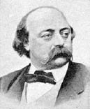

(1821 – 1880)

"Madame Bovary" adını duymamış biri varsa o insanın hayatında hiç roman okumadığını düşünebilirsiniz! Çünkü roman okumaya başladığınızda karşınıza çıkacak ilk ve en önemli romanlardan biri Madam Bovary, ilk yazarlardan biri de edebiyatta gerçekçiliğin en önemli temsilcilerinden biri olan Gustave Flaubert'tir.
Gustave Flaubert (okunuşu: Güstav Flober) 12 Aralık 1821'de Fransa Rouen'de doğdu. Bir hekim kızı olan annesi Justine-Caroline Fleuriot ile Hôtel-Dieu'de başcerrahlık yapan babası Achille-Cléophas'nın ortanca çocuğuydu. Edebiyat alanındaki ilk denemelerini Rouen Lisesi'ndeki okul gazetesinde ve Le Colibri (Sinek Kuşu) adlı küçük bir dergide yaptı. Yazmaktan başka bir yeteneği olmadığına o yıllarda karar verdi. Flaubert'in hayat hikayesi, aslında temel olarak yazdıklarının da hikayesidir. 1832–1840 yılları arasında Rouen Koleji'nde okudu. 1836 yılında, on beş yaşındayken Trouville sahilinde tanıştığı, o sırada kendisinden on yaş büyük, yirmi altı yaşında evli bir kadın olan Elisa Schlésinger'e tutkulu bir aşkla bağlandı. Hayatı boyunca –mesafeli bir şekilde de olsa– ona âşık kaldı. Bu aşk, yaşamında çok önemli izler bıraktı. Bir delikanlının gönül eğitimi olarak nitelendirdiği aşkın kahramanı olan bu kadın, Duygusal Eğitim'deki Marie Arnoux karakterinin temel esin kaynağı oldu. Flaubert bu dönemde yoğun bir şekilde yazdı. Bir Çılgının Hatıraları (1838), Smarh (1839) ve 1840 yılında yazmaya başlayıp 1842 yılında bitirdiği Kasım bu dönemin ürünleridir.
1845'te Duygusal Eğitim'in ilk taslağını bitirdi ve ailesiyle beraber çıktığı bir İtalya seyahatinde, Cenova'da görüp derinden etkilendiği bir Brueghel tablosunun verdiği ilhamla Ermiş Antonius ve Şeytan'ı yazmaya başladı. 1846 yılında babası ve bir kızı olan ablası Caroline de ölünce annesi ve yeğeniyle Rouen yakınlarındaki Croisset'ye yerleşti, yaşamının geri kalan kısmını burada geçirdi. Flaubert'in bu dönemdeki mektuplaşmaları, özellikle de uzatmalı sevgilisi Louise Colet ile yazışmaları hayli ilginçtir ve rahatlıkla Flaubert'in eserleri arasında sayılabilir. Colet ile aralarındaki fırtınalı ilişki 1846'dan 1854'e kadar aralıklarla sürdü. Ayrılıklarının ardından artık Madame Bovary konulu mektupların hepsinin muhatabı yeni arkadaşı Louis Bouilhet oldu.
1848 Devrimi sırasında Flaubert, yakın dostları Louis Bouilhet ve Maxime du Camp'la birlikte, devrime tanık olmak için Paris'e gitti. Kasım 1849'dan Nisan 1851'e kadar Maxime du Camp ile birlikte Yunanistan, Anadolu, Mısır, Filistin, Suriye ve İtalya'yı dolaştı. Flaubert Doğu yolculuğunun son kısmında; Mısır, Filistin, Lübnan ve Suriye'den sonra, 1850 ekiminde arkadaşı Maxime Du Camp ile birlikte İstanbul'a geldi. İstanbul'da Galata'daki Justiniano Oteli'nde konaklayan Flaubert, annesiyle buradan da mektuplaştı.
Yakındoğu seyahatinden dönüşünden üç ay sonra, Eylül 1851'de Madame Bovary'yi yazmaya başladı. Kitabı 1856 baharında bitirdi. 1857'de yazara Madame Bovary'nin "ahlakdışı" olduğu suçlamasıyla dava açıldı ancak Roven'li avukat Marie-Antoine-Jules Sénard, başarılı savunmasıyla kitap ve yazarı akladı (Flaubert, kitabı daha sonra Sénard'a ithaf etmiştir). Dava tümüyle yazarın hayatın gerçeklerini anlatma hakkı ekseninde sürmüştü.
1857'nin sonlarına doğru, ilk adı Kartaca olan Salammbo'yu yazmaya koyuldu. Yazar, 1858 ilkbaharında Kuzey Afrika'ya yaptığı bir araştırma gezisi dolayısıyla yazmaya iki aylığına ara verdiği bu romanı Nisan 1862'de bitirdi. 1864–1869 yılları arasında yazdığı Duygusal Eğitim'le beraber Flaubert'in "modern" "burjuva" konulara geri döndüğü söylenebilir. Yazar tekrar Ermiş Antonius ve Şeytan'ı yazmaya devam etti, 1872'de ise üçüncü ve son versiyonunu bitirdi ve kitap 1874'te yayımlandı. Bu yapıtta M.S. 4. yüzyılda bir rahibin yaşamı çevresinde din ve felsefe konuları tartışılır. Bitiremediği son projesi Bouvard ve Pécuchet'yi yazmayaysa 1874'te başladı.
Madame Bovary ile "gerçekçi roman" alanında çığır açan Gustave Flaubert, 8 Mayıs 1880 günü beyin kanaması sonucu Croisset'de öldü ve Normandiya'da toprağa verildi.
Seçme Romanları: Madame Bovary (1857 – Oğlak Yayınları, 2001), Salammbo (1862), Aşk Eğitimi (1869 – İthaki Yayınları, 2004), Ermiş Antonius ve Şeytan (1874)